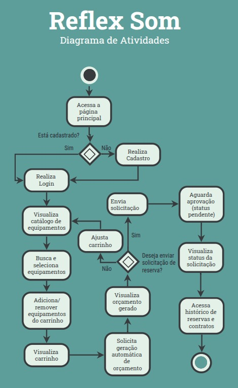

Casos de Usos

Especificação de Caso de Uso: Realizar cadastro de cliente
Personna: Cliente
1. Breve Descrição
Este caso de uso permite que novos clientes realizem o cadastro na plataforma da Reflex Som, fornecendo seus dados pessoais e criando uma conta de acesso. Após o cadastro, o cliente poderá acessar funcionalidades como solicitar orçamentos e reservar equipamentos.
2. Fluxo Básico de Eventos com Regras Relacionadas
- O cliente acessa a página inicial da plataforma.
- O cliente clica na opção "Cadastrar-se".
- O sistema exibe o formulário de cadastro.
- O cliente preenche os seguintes campos obrigatórios:
- Nome completo
- CPF ou CNPJ
(↳ ver RN003 – Validação de CPF/CNPJ)
- Telefone
- Senha
- Confirmação de senha
(↳ ver RN001 – Validação de campos obrigatórios)
- O cliente clica no botão "Concluir Cadastro".
- O sistema valida os dados informados.
(↳ ver RN002 – Validação de formato de e-mail e senha)
(↳ ver FA2 – Campos obrigatórios não preenchidos ou inválidos) - O sistema verifica se já existe uma conta com o CPF/CNPJ ou e-mail informado.
(↳ ver FA1 – Conta já cadastrada)
(↳ ver RN004 – Cadastro único por CPF/CNPJ e e-mail) - O sistema salva os dados no banco.
(↳ ver FE1 – Erro interno ao salvar os dados)
- O sistema exibe mensagem de sucesso.
- O caso de uso é encerrado.
3. Fluxos Alternativos
FA1 – Conta já cadastrada com o mesmo CPF/CNPJ ou e-mail (↳ passo 7)
- O fluxo alternativo inicia no passo 7 do fluxo principal.
- O sistema informa que já existe uma conta cadastrada com os dados informados.
(↳ ver RN004 – Cadastro único por CPF/CNPJ e e-mail)
- O sistema exibe a mensagem "Tente novamente com outro e-mail/CPF".
- O fluxo retorna ao passo 3.
FA2 – Campos obrigatórios não preenchidos ou inválidos (↳ passo 6)
- O fluxo alternativo inicia no passo 6.
- O sistema identifica que há campos obrigatórios em branco ou com dados inválidos.
(↳ ver RN001 – Campos obrigatórios)
- O sistema exibe mensagens de erro específicas por campo.
- O cliente corrige os campos.
- O fluxo retorna ao passo 5.
4. Fluxo de Exceção
FE1 – Erro interno ao salvar os dados (↳ passo 8)
- O fluxo de exceção inicia no passo 8.
- O sistema não consegue salvar os dados por erro de conexão ou banco.
- O sistema exibe uma mensagem de erro geral.
- O cliente pode tentar novamente ou contatar o suporte.
- O fluxo é encerrado.
5. Pré-Condições
- O cliente ainda não possui cadastro na plataforma.
- O cliente tem acesso à internet e ao site da Reflex Som.
6. Pós-Condições
- Uma nova conta é criada e salva no banco de dados.
- O cliente pode efetuar login com as credenciais recém-criadas.
7. Regras de Negócio
RN001 – Todos os campos marcados como obrigatórios devem ser preenchidos.
RN002 – O e-mail deve ser válido e a senha deve conter no mínimo 8 caracteres, incluindo letra maiúscula, número e caractere especial.
RN003 – CPF ou CNPJ devem ser válidos conforme algoritmos de verificação.
RN004 – Não deve ser permitido cadastro duplicado para o mesmo e-mail ou CPF/CNPJ.
Especificação de Caso de Uso: Realizar login do Cliente
Persona: Cliente
1. Breve Descrição
Este caso de uso permite que um cliente com cadastro ativo na Reflex Som acesse a plataforma utilizando suas credenciais (e-mail e senha). Após o login bem-sucedido, o cliente será redirecionado para sua área pessoal, onde poderá visualizar o catálogo, solicitar orçamentos e gerenciar reservas.
2. Fluxo Básico de Eventos
- O cliente acessa a página inicial da plataforma.
- O cliente clica na opção "Entrar".
- O sistema exibe o formulário de login com os campos:
- Senha
- O cliente preenche os campos e clica em "Acessar".
Ver RN001 – Campos obrigatórios
- O sistema valida os campos preenchidos.
Ver RN002 – Validação de formato de e-mail
- O sistema verifica se as credenciais são válidas.
Ver FA1 – Credenciais inválidas
Ver RN003 – Verificação de autenticação - O sistema autentica o cliente e inicia uma sessão.
- O sistema redireciona o cliente para a área logada.
- O caso de uso é encerrado.
3. Fluxos Alternativos
FA1 – Credenciais inválidas (↳ passo 6)
- O fluxo alternativo inicia no passo 6.
- O sistema informa que o e-mail ou a senha estão incorretos.
- O sistema exibe novamente o formulário de login.
- O cliente pode tentar novamente.
- O fluxo retorna ao passo 3.
FA2 – Campos obrigatórios não preenchidos (↳ passo 5)
- O fluxo alternativo inicia no passo 5.
- O sistema identifica que um ou mais campos estão em branco.
- O sistema exibe uma mensagem de erro indicando os campos obrigatórios.
- O cliente corrige os campos.
- O fluxo retorna ao passo 4.
Ver RN001
4. Fluxos de Exceção
FE1 – Erro interno ao autenticar (↳ passo 6 ou 7)
- O sistema tenta autenticar o cliente, mas ocorre uma falha técnica (ex: indisponibilidade do banco de dados).
- O sistema exibe uma mensagem genérica de erro: "Erro ao tentar acessar. Tente novamente mais tarde."
- O cliente é mantido na tela de login.
- O fluxo é encerrado.
5. Pré-Condições
- O cliente já deve estar cadastrado na plataforma.
- O cliente está na página pública da Reflex Som.
6. Pós-Condições
- Uma sessão autenticada é iniciada.
- O cliente tem acesso aos recursos da área logada.
7. Regras de Negócio
RN001 – Campos obrigatórios
- Referente ao passo 4 e FA2
- Os campos e-mail e senha são obrigatórios para login.
RN002 – Validação de e-mail
- Referente ao passo 5
- O e-mail deve seguir o formato válido: exemplo@dominio.com.
RN003 – Verificação de autenticação
- Referente ao passo 6
- As credenciais devem ser verificadas contra os dados armazenados no banco. Senhas devem ser comparadas de forma criptografada (hash seguro, ex: bcrypt).
Especificação de Caso de Uso: Realizar logoff
Persona: Cliente
1. Breve Descrição
Este caso de uso permite que um cliente autenticado encerre sua sessão ativa na plataforma, retornando à página inicial. O logoff garante que o acesso às funcionalidades protegidas seja bloqueado até novo login.
2. Fluxo Básico de Eventos
- O cliente encontra-se logado na plataforma.
- O cliente clica no ícone do perfil localizado no topo da tela.
- O sistema exibe um menu suspenso com a opção “Sair”.
- O cliente clica na opção "Sair".
- O sistema encerra a sessão autenticada.
Ver RN001 – Encerramento de sessão
Ver FE1 – Erro ao encerrar sessão - O sistema redireciona o cliente para a página inicial da plataforma.
- O caso de uso é encerrado.
4. Fluxos de Exceção
FE1 – Erro ao encerrar sessão (↳ passo 5)
4.1.1 O fluxo de exceção inicia no passo 5 do fluxo principal.
4.1.2 O sistema encontra uma falha ao encerrar a sessão (ex: token inválido ou falha de comunicação).
4.1.3 O sistema exibe uma mensagem de erro genérica: "Não foi possível encerrar a sessão. Tente novamente."
4.1.4 O cliente permanece na mesma página.
4.1.5 O fluxo é encerrado.
5. Pré-Condições
- O cliente deve estar autenticado na plataforma.
- O sistema deve estar operacional.
6. Pós-Condições
- A sessão autenticada é encerrada.
- O cliente é tratado como visitante e não pode acessar funcionalidades restritas.
7. Regras de Negócio
RN001 – Encerramento de sessão
- Referente ao passo 5 do fluxo básico
- Referente também ao FE1
- O sistema deve eliminar o token de autenticação da sessão (ex: JWT ou sessão em cache) e garantir que o cliente seja tratado como visitante.
Diagrama de Atividades
